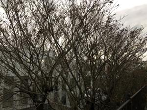
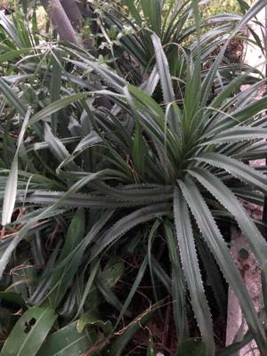

うるがいの話 ある日
最新: 一期一会うるがいとは 前提知識です
カニの画像をクリックすると『うるがいの話』サイトを表示します|
|
【うるがいの話】 うるがい(ｳﾙｶﾞｲ urugai)とは、『もずくがに』の名前でとても大きくなります。 |
|---|---|
|
|
【Got cat カミマヤーの話】 たながー（ﾀﾅｶﾞｰtanagaa）とは手長えびのことで、何種類かあり大きいのは車 エビぐらいになります。 |

|
【ぶながぁの話】 ぶながー(bunagaa)とは、赤い髪の毛、赤い身体、そして身長は１ｍ２０ｃｍ ぐらい、川の蟹を食べているの目撃された。場所は沖縄県国頭郡大宜味村のと ある村僕の隣近所に住んでいる爺さんから、聞いた話です。 |
|
|
【ギーマの話】 ギーマ(giima)とは、山原の里山に咲くスズランに似た、 花を付けます。実は食べられます、 気が付くと口の周りが紫になっています。 |
2021年10月18日 (月）一期一会
16:30
 
広葉樹が黄色に紅葉しているのを、２週間前に気付く。お、ここまで紅葉する
のかと思って写真を撮ろうと思ったが止めた。暫くすると、葉はすっかり落ち
てしまった。あの時､撮っておけばよかったと思ったが、来年まで待つか。「
禅の言葉とジブリ（徳間書店）」龍雲寺住職・細川晋輔著を読み終える、予約
した本をとる間にたまたまカウンターにあった本だ。去年の９月発行された新
書でコロナの話が出てくる。講話などの軒並み出来なくなり、ついにはユチュ
ーブも利用する事になったと。ほー、ネットでみると確かにある。松原泰道が
編集した仏教を読むしリーズ１０巻の最後の２冊をいま読んでいる。細川晋輔
さんは松原泰道（まつばらたいどう、２００９年没）の孫との事、ほほ。本に
一期一会（いちごいちえ）の話があった、明日はないと思え！、なるほど。気
温が４度ほど下がっている、異常気象か。